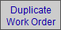
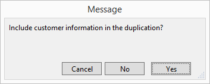
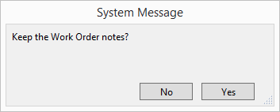
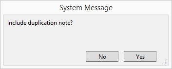
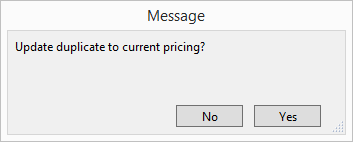

Duplicate a Work Order
When duplicating a Work Order, you can choose to carry over different bits8 of data into the duplicate copy.
How to Set up Work Order Duplicates
To help you when duplicating orders, FrameReady has a few settings to set up first.
-
On the Main Menu, in the "Work Orders" section, open the Options tab.
-
Click the More Options... button.
-
The Work Order Options opens.

-
The following settings provide a Yes, No, or Ask options.
-
When duplicating a WO keep the original notes
Choose Yes to always copy the original Work Order note to a duplicate Work Order.
Choose No to never copy.
Choose Ask to be given the choice each time. -
When duplicating a WO add duplication note
The duplication note reads: This work order was duplicated from: ###
Choose Yes to always copy the original Work Order note to a duplicate Work Order.
Choose No to never copy.
Choose Ask to be given the choice each time.
How to Duplicate a Work Order
-
Locate the Work Order you wish to duplicate.
-
Click the left sidebar button Duplicate Work Order.

A series of dialog boxes may appear. You may see fewer dialog boxes if you set any of the above to Yes or No. -
To include the customer's information in the duplicate, click Yes. Otherwise, choose No.

-
If When duplicating a WO keep the original notes is set to Ask (and there is a note on the Work Order), then FrameReady asks if you wish to include a copy of the original notes in the duplicate.
To include a copy of the original notes in the duplicate, click Yes. Otherwise, choose No.

-
If When duplicating a WO add duplication note is set to Ask, then FrameReady asks if you wish to include a duplicate note.
To include a note that this Work Order is a duplicate, click Yes. Otherwise, choose No.
The note is formatted to read: This work order was duplicated from: [Work Order Number]

-
To update the framing components on the Work Order to the latest prices, click Yes. Otherwise, choose No.

© 2023 Adatasol, Inc.